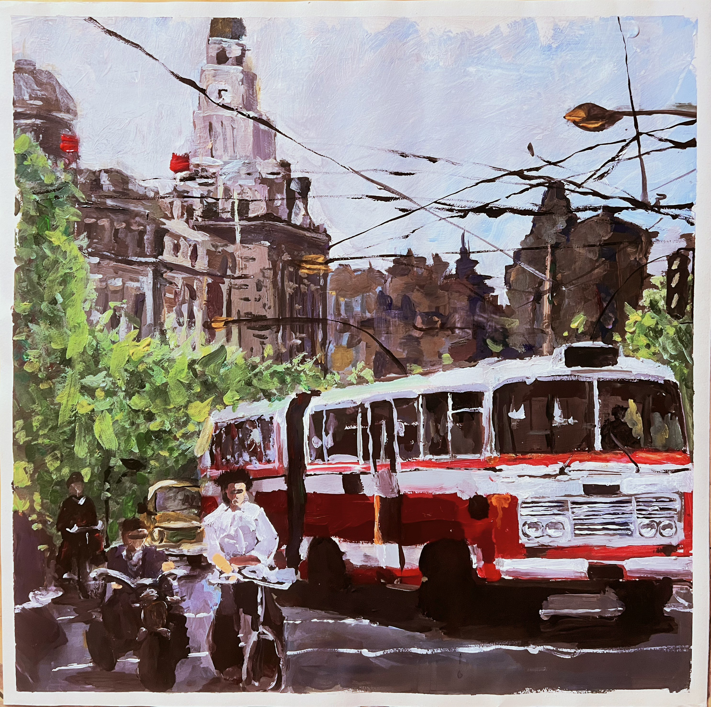
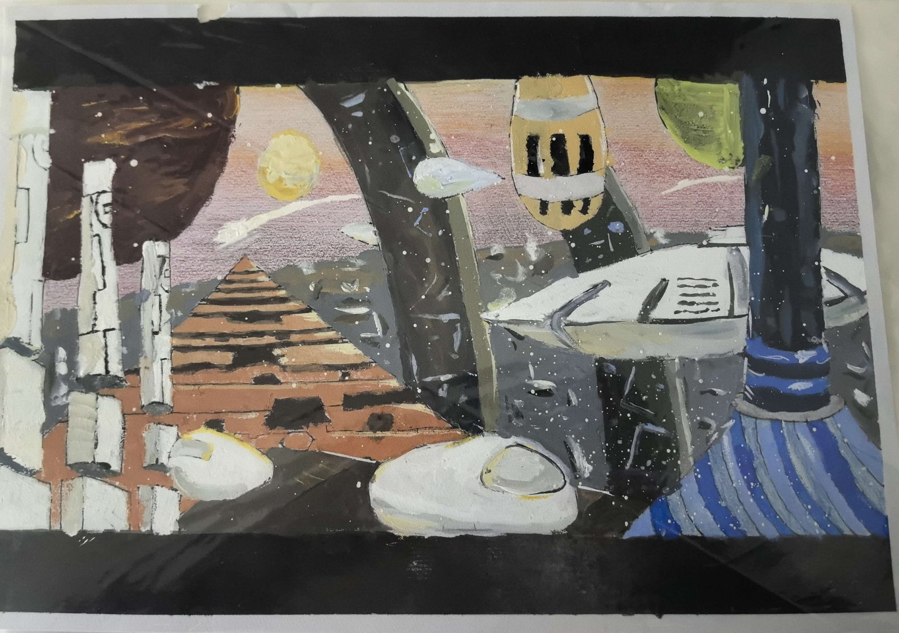

Artworks & Sketches
My paintings and sketches
Old Shanghai — Watercolor
The Bund, in watercolor

Inspired by a deep interest in modern history and the TV series The Awakening Age, this watercolor painting captures 1980s Shanghai. Using broad brushstrokes and dark tones to evoke a sense of historical depth, the piece received the "Award of Excellence" in the People's Art Youth 2023 Art Creation Activity.
This painting received the "Award of Excellence" — People's Art Youth in Sep 2023.
Three Body
Watercolor

A watercolor painting inspired by the sci-fi novel The Three-Body Problem. Captivated by its cosmic scale and futuristic imagination, I sought to bring the book's striking scenes to life, exploring how traditional brushwork can capture the wonder and mystery of deep space.